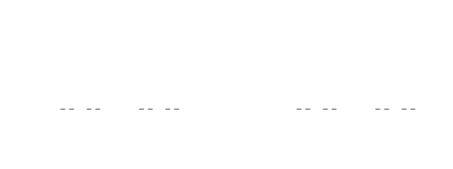

1.1 Story

Strony_04_05
Strony_06_07
To fascynujące, że powtarzanie w nieskończoność tych samych czynności może prowadzić to arcyciekawych figur - fraktali.
Taką figurę może narysować każdy, wystarczy podstawowa znajomość programowania. Krok po kroku pokażemy jak skonstruować różne klasy fraktali. Znajomość podstaw algebry, prawdopodobieństwa lub topologii pozwala dokładniej zrozumieć skąd się te zaskakujące figury biorą.
Jedną z ciekawszych metod konstrukcji fraktali jest metoda ,,przez wygryzanie’’. Bierzemy pewną figurę a następnie usuwamy z niej (wygryzamy) kawałki. To co zostaje jest fraktalem, często o zaskakujących właściwościach.
Zilustrujmy to na przykładzie fraktalu nazywanego kurzem Kantora.
Receptura na konstrukcje kurzu Kantora jest prosta:
Ilustracja czterech kolejnych kroków algorytmu wygryzania znajduje się na Rysunku 1.

Rysunek 1: Pierwsze 5 iteracji w konstrukcji kurzu Kantora
Powyższy algorytm ma kilka elementów typowych dla fraktali. Po pierwsze nigdy się nie kończy, całą procedurę należy (przynajmniej w teorii) powtarzać nieskończenie wiele razy. Po drugie, mamy do czynienia z rekurencją, pewien krok prowadzi do powstania zbioru obiektów a następnie każdy z tych obiektów jest ponownie przekształcany w ten sam sposób.
W bardzo podobny sposób można otrzymać wiele ciekawych fraktali, ale przyjrzyjmy się jeszcze przez chwilę kurzowi Kantora. Zobaczmy co my właściwie otrzymaliśmy w wyniku tej procedury.
Sprawdźmy może jak duży jest ten obiekt lub jaką ma długość.
Początkowo odcinek miał długość \(1\), ale w pierwszym kroku usunęliśmy \(1/3\). W drugim kroku usunęliśmy \(2\) razy po \((1/3)^2\). Powtarzając to kilkukrotnie w kroku \(k\) usuwamy \(2^{k-1}\) odcinków, każdy o długości \((1/3)^k\). A więc długość tego tworu w kroku \(k\) to
\[ 1 - 1/3 - 2*(1/3)^2 - ... - 2^{k-1}*(1/3)^k = 1 - \sum_{i=1}^k 2^{k-1}*(1/3)^k = 1 - 1/2 \sum_{i=1}^k (2/3)^k = 0 \]
Do tego samego wniosku można dojść stosując inne rozumowanie, a mianowicie patrząc, ile zostało po \(k\) kroku. Po pierwszym kroku mamy \(2\) odcinki długości \(1/3\), po drugim kroku mamy \(2^2\) odcinków długości \((1/3)^2\) a po \(k\) kroku mamy \(2^k\) odcinków o długości \((1/3)^k\). Do czego zbiega ten szereg?
\[ \lim_{k \rightarrow \infty} (2/3)^k = 0 \]
Nie ma więc wątpliwości, zbiór Kantora ma długość równą \(0\). Ale ewidentnie nie jest zbiorem pustym, bo ma wiele punktów. Jak wiele? Okazuje się, że tyle samo co cały odcinek, a więc nieprzeliczalnie wiele. Pokażmy to za pomocą pewnego sprytnego dowodu.
Twierdzenie: Zbiór Kantora jest równoliczny z odcinkiem [0-1).
Dowód:
Aby policzyć punkty w zbiorze Kantora, potrzebujemy dla każdego punktu skonstruować rodowód, a więc zapis pozwalający jednoznacznie zidentyfikować każdy punkt. Rodowodem jednoznacznie identyfikującym punkt nazwiemy zbiór decyzji, określających jak do tego punktu dotrzeć w kolejnych krokach procedury generującej kurz Kantora.
Pamiętamy, że w każdym kroku usuwane są środku z odcinków, więc punkt, który należy do kurzu będzie leżał albo w lewym albo w prawym odcinku. Ten wybór (lewy/prawy) trzeba podjąć w każdym kroku konstrukcji kurzu. Taki rodowód możemy zapisać przez nieskończoną sekwencje cyfr 0/1, jeżeli w sekwencji na pozycji k występuje 0 to punkt należy do lewego pododcinka, jeżeli 1 to do prawego. Zauważmy, jednoznaczność -> każdy punkt z kurzu Kantora może być opisany przez nieskończoną sekwencje cyfr 0/1. Jednocześnie każda nieskończona sekwencja cyfr opisuje jakiś punkt ze zbioru Kantora, a różne sekwencje opisują różne punkty. Ile jest takich sekwencji? Kontinuum. Wystarczy bowiem myśleć o tych sekwencjach jak o rozwinięciach dwójkowych liczb z przedziału [0,1].
Co więc mamy? Kurz Kantora ma tyle samo punktów co odcinek [0,1]. Ale jednocześnie ma długość 0, choć odcinek ma oczywiście długość 1.
Jak to możliwe? To jedna z wielu zagadek kryjących się w krainie fraktali malowanych nieskończonością.
Jeden z najbardziej znanych fraktali to trójkąt Sierpińskiego.
Receptura na konstrukcje tego trójkąt jest dosyć podobna do kurzu Kantora. Oto dokładny przepis:
Ilustracja czterech kolejnych kroków algorytmu wygryzania znajduje się na Rysunku 2.

Rysunek 2: Pierwsze cztery iteracje w konstrukcji trójkąta Sierpińskiego
Ładny to twór. Ale jakie ma właściwości? Jakie jest jego pole?
Tutaj już szybkie rachunki pozwalają rozwiać wszelkie wątpliwości. W kroku \(k\) trójkąt składa się z \(3^k\) trójkątów, każdy o boku \((1/2)^k\), czyli polu \(\sqrt{3}/2^{2k+1}\), czyli o łącznym polu \((3/4)^k*\sqrt{3}/2\). W granicy mamy więc
\[ \lim_{k \rightarrow \infty} (3/4)^k*\sqrt{3}/2 = 0 \]
Więc trójkąt Sierpińskiego jest tak dziurawy, że ma pole równe 0. A jak długi jest jego brzeg? W kroku \(k\) brzeg zwiększa się o \(3^{k-1}\) trójkątów, każdy o boku \((1/2)^k\), czyli obwodzie \(3*(1/2)^k\). Czyli łaczny brzeg w kroku \(k\) to
\[ \sum_{i=1}^k 3^{k-1}*3*(1/2)^k = \sum_{i=1}^k (3/2)^k. \]
Elementy tego szeregu rosną do nieskończoności, więc tym bardziej cały obwód też eksploduje do nieskończoności.
\[ \lim_{k \rightarrow \infty}\sum_{i=1}^k (3/2)^k = \infty \]
Co to za figura, jest ograniczona bo się mieści w trójkącie o boku 1, ale ma nieskończony obwód przy zerowym polu. Z jakiego to jest wymiaru?
Prawdopodobnie do tego miejsca część czytelników zadaje sobie pytanie czym są fraktale. Czy to takie dziwne obrazki? A jeżeli tak to jak je scharakteryzować?
Jedną z częściej powtarzanych definicji fraktali jest definicja podana przez Mandelbrota, którą sparafrazuję do:
Fraktalem nazywamy taki zbiór, którego wymiar Hausdorfa nie jest liczbą całkowitą.
Ok, a czym jest ten wymiar Hausdorfa? Gdy myślimy o przestrzeniach Euklidesowych wymiarem określano liczbę ortogonalnych kierunków/wektorów rozpinających daną przestrzeń. I tak punkt ma wymiar 0, prosta ma wymiar 1, płaszczyzna ma wymiar 2, wszyscy doświadczamy trójwymiarowej przestrzeni. Czasem pewne obiekty możemy opisywać też w przestrzeniach o wyższych wymiarach i nie ma tu żadnych ograniczeń. Matematyk z podekscytowaniem w głosie może opowiadać o przestrzeni funkcji, która jest nieskończenie wymiarowa.
Wymiar Hausdorfa określa się dla obiektów geometrycznych zanurzonych w zwykłych \(p\)-wymiarowych przestrzeniach (my ograniczymy się praktycznie wyłącznie do \(p=2\)). Aby go wyznaczyć, musimy policzyć iloma \(p\) wymiarowymi kostkami o boku \(\varepsilon\) można przykryć interesujący nas obiekt.
Jeżeli przez \(N(\varepsilon)\) określimy minimalną liczbę kostek pokrywających obiekt \(F\) to wymiarem Hausdorfa \(d_F\) tego obiektu jest \[ d_F = \lim_{\varepsilon \rightarrow 0} \frac{\log N(\varepsilon)}{\log 1/\varepsilon} \]
Przyjmijmy na razie, że interesują nas kostki o boku \(\varepsilon = 2^{-k}\). Jeżeli chcemy przykryć nimi kwadrat o boku \(1\) to potrzebujemy ich przynajmniej \(N(\varepsilon) = 2^k * 2^k = 2^{2k}\). Więc wymiar Hausdorfa kwadratu to
\[ d_F = \lim_{k \rightarrow \infty} \frac{\log 2^{2k}}{\log 1/2^{-k}} = 2 \]
A co z trójkątem Sierpińskiego? Tutaj wystarczy nam \(N(\varepsilon) = 3^k\) kostek o boku \(2^{-k}\), a więc wymiar Hausdorfa dla tego trójkąta to
\[ d_F = \lim_{k \rightarrow \infty} \frac{\log 3^{k}}{\log 1/2^{-k}} = \frac{\log 3}{\log 2} = 1,5849... \]
Rysunek 3 ilustruje jak wygląda przykładowe pokrycie trójkąta Sierpińskiego takimi kostkami.

Rysunek 3: Pokrycie trójkąta Sierpińskiego kostkmi o boku 1/4 (lewy panel) i 1/8 (prawy panel)
A jak to wygląda dla kurzu Kantora? Tym razem mamy obiekt zanurzony w przestrzeni jednowymiarowej, więc będziemy go przykrywać odcinkami. Przyjmijmy, że mamy odcinki o długości \(\varepsilon = 3^{-k}\), aby pokryć cały kurz Kantora wystarczy nam takich odcinków \(N(\varepsilon) = 2^k\), czyli wymiar Hausdorfa dla kurzu Kantora
\[ d_F = \lim_{k \rightarrow \infty} \frac{\log 2^{k}}{\log 1/3^{-k}} = \frac{\log 2}{\log 3} = 0,6309... \]
Wymiar mniejszy niż 1? To nic nadzwyczajnego w świecie fraktali.
Receptura na konstrukcje dywanu Sierpińskiego jest podobna do trójkąta. Oto dokładny przepis:
Ilustracja czterech kolejnych kroków algorytmu wygryzania znajduje się na Rysunku 4.
Rysunek 4: Pierwsze cztery iteracje w konstrukcji dywanu Sierpińskiego
Jaki jest wymiar Hausdorfa tego tworu? Weźmy kostki o wielkości \(\varepsilon = 3^{-k}\). Do zakrycia dywanu wystarczy nam \(N(\varepsilon) = 8^k\) kostek o boku \(3^{-k}\). Więc wymiar Hausdorfa dla tego dywanu to
\[ d_F = \lim_{k \rightarrow \infty} \frac{\log 8^{k}}{\log 1/3^{-k}} = \frac{\log 8}{\log 3} = 1,8927... \]
W programie R nie ma funkcji rysującej trójkąty, więc musimy ją najpierw zdefiniować. Do tego celu używamy funkcji polygon, która rysuje wypełnione zamknięte wielokąty. Na jej bazie definiujemy funkcje trojkat rysującą trójkąt równoboczny o boku bok zaczepiony lewym dolnym rogiem w punkcie (x, y).
trojkat <- function(x, y, bok) {
polygon(x + bok*c(0, 1, 1/2),
y + bok*c(0, 0, sqrt(3)/2),
col = "black")
}Przetestujmy tę funkcję. Najpierw funkcją plot.new otworzymy nowy obszar do rysowania o wymiarach 1x1 a następnie narysujemy trójkąt o boku 1.
plot.new()
trojkat(0, 0, 1)
Jeżeli chcielibyśmy narysować drugi krok konstrukcji trójkąta Sierpińskiego to musielibyśmy wywołać funkcję trojkat trzy razy.
plot.new()
trojkat(0, 0, 0.5)
trojkat(0.5, 0, 0.5)
trojkat(0.25, sqrt(3)/4, 0.5)
Aby narysować trzeci krok należałoby wywołać tę funkcję \(3^2\) razy.
plot.new()
trojkat(0, 0, 0.25)
trojkat(0.25, 0, 0.25)
trojkat(0.125,sqrt(3)/8, 0.25)
trojkat(0.5, 0, 0.25)
trojkat(0.75, 0, 0.25)
trojkat(0.625, sqrt(3)/8, 0.25)
trojkat(0.25, sqrt(3)/4, 0.25)
trojkat(0.50, sqrt(3)/4, 0.25)
trojkat(0.375,3*sqrt(3)/8, 0.25)
Rysowanie kolejnych kroków kopiując linijki z funkcją trojkat byłoby niepraktyczne. Znacznie lepiej wykorzystać rekurencje. Poniżej tworzymy funkcje fraktal_trojkat, która w kroku 0 rysuje w trójkąt o zadanym boku a w innych krokach wywoluje się z poleceniem narysowani trzech miejszych fraktali o boku będącym połową wyjściowego.
fraktal_trojkat <- function(x, y, bok, krok = 0) {
if (krok == 0) {
trojkat(x, y, bok)
} else {
fraktal_trojkat(x, y, bok/2, krok - 1)
fraktal_trojkat(x+bok/2, y, bok/2, krok - 1)
fraktal_trojkat(x+bok/4, y+sqrt(3)*bok/4, bok/2, krok - 1)
}
}Wypróbujmy ją!
Może na początek ustawmy 5 iteracji, przez co narysujemy \(3^5 = 243\) trójkątów.
plot.new()
fraktal_trojkat(0, 0, bok = 1, krok = 5)
Bardzo bardzo mały trójkąt wygląda jak punkt
Zamiast rysować trójkąt wystarczy narysować jeden punkt, bo trójkąty po pewnym czasie i tak są strasznie małe.
Tyle, że trójkąt Sierpińskiego składająca się z \(243\) punktów jest dosyć dziurawa. Dlatego sprawdzimy jak wygląda dla 8 iteracji.
plot.new()
fraktal_punkt <- function(x, y, bok, krok = 0) {
if (krok == 0) {
points(x, y, pch=".", col="black")
} else {
fraktal_punkt(x, y, bok/2, krok - 1)
fraktal_punkt(x+bok/2, y, bok/2, krok - 1)
fraktal_punkt(x+bok/4, y+sqrt(3)*bok/4, bok/2, krok - 1)
}
}
fraktal_punkt(0, 0, bok = 1, krok = 8)
Ile punktów narysowaliśmy?
import numpy as np
import matplotlib.pyplot as plt
def trojkat(x, y, bok):
E = np.array([[x+bok*0,y+bok*0], [x+bok*1,y+bok*0], [x+bok*1/2,y+bok*np.sqrt(2)/2], [x+bok*0,y+bok*0]])
return plt.Polygon(E, facecolor = 'k')using Plots
function trojkat(x, y, bok)
return [(x+bok*0,y+bok*0),(x+bok*1,y+bok*0),(x+bok*1/2,y+bok*sqrt(2)/2),(x+bok*0,y+bok*0)]
end
# czyścimy ekran
E = 0.05
Plots.plot(0,xlim=(0-E,1+E),ylim=(0-E,1+E-0.1))
function rysuj_uszczelke(x, y, szerokosc, iteracja)
if iteracja == 0
Plots.plot!(trojkat(x, y, szerokosc), seriestype=:shape, color=:black, legend=:false)
else
rysuj_uszczelke(x, y, szerokosc / 2, iteracja - 1)
rysuj_uszczelke(x+szerokosc / 2, y, szerokosc / 2, iteracja - 1)
rysuj_uszczelke(x+szerokosc / 4, y+sqrt(3)*szerokosc/4, szerokosc / 2, iteracja - 1)
end
current()
end
rysuj_uszczelke(0, 0, 1, 5)
using Plots
# czyścimy ekran
E = 0.05
Plots.plot(0,xlim=(0-E,1+E),ylim=(0-E,1+E-0.1))
function rysuj_uszczelke(x, y, szerokosc, iteracja)
if iteracja == 0
Plots.scatter!([x], [y], markerstrokecolor=:white, markersize=3, color=:black, legend=:false)
else
rysuj_uszczelke(x, y, szerokosc/2, iteracja - 1)
rysuj_uszczelke(x+szerokosc/2, y, szerokosc/2, iteracja - 1)
rysuj_uszczelke(x+szerokosc/4, y+sqrt(3)*szerokosc/4, szerokosc/2, iteracja - 1)
end
current()
end
rysuj_uszczelke(0, 0, 1, 8)
{kind=link}